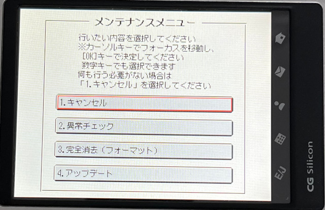
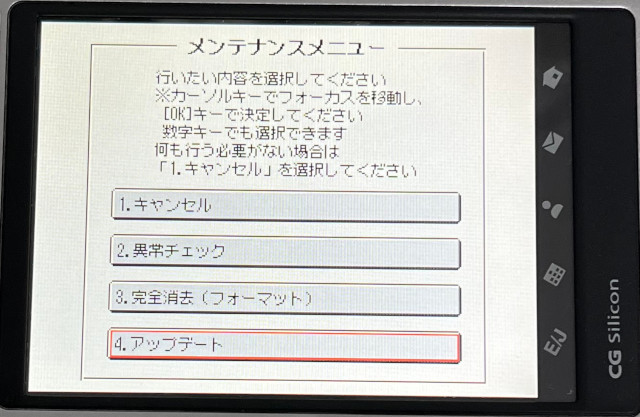
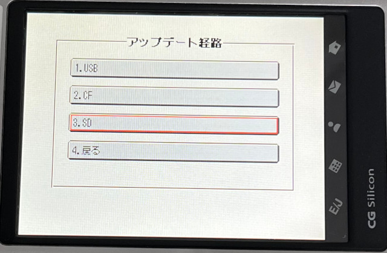
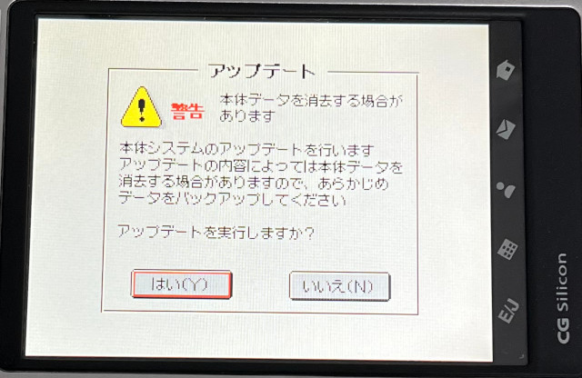
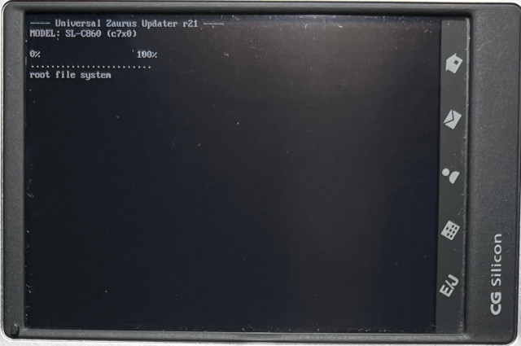
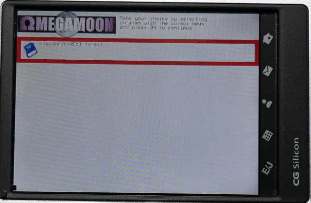
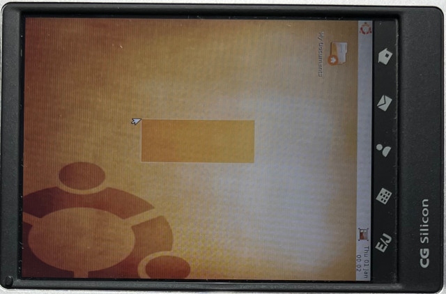

參考資訊：
https://files.nazaryev.ru/misc/zaurus/zubuntu/
https://sites.google.com/site/bakaralijedhava/bakarali/ubuntu-8-04-on-zaurus
安裝開機選單：
1. 下載https://github.com/steward-fu/website/releases/download/zaurus/zubuntu8.04_updater.sh(重新命名成updater.sh)
2. 下載https://github.com/steward-fu/website/releases/download/zaurus/zubuntu8.04_zImage_c7x0-c860.bin(重新命名成zImage)
3. 格式化SDCard(1GB)成FAT16檔案系統且不要有磁碟標籤
4. 將updater.sh、zImage複製到SDCard根目錄
5. 將SDCard插入機器
6. 按住OK並且開機






